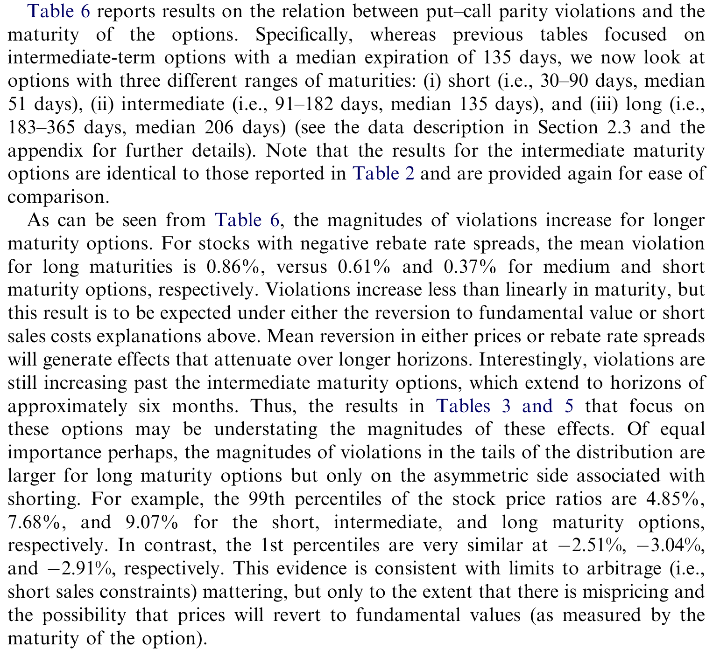
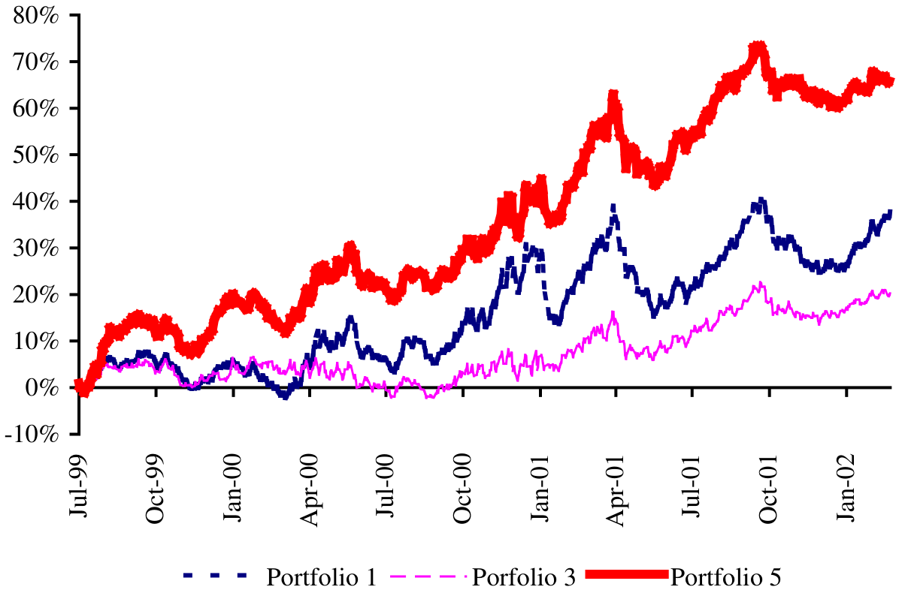
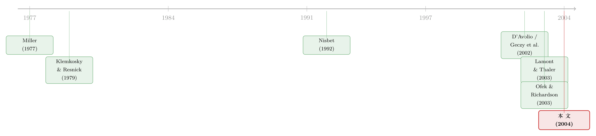

同一份现金流，两个价格：当「借不到的券」撑开了期权与股票的裂缝
本文读的是 Ofek, Richardson & Whitelaw (2004, JFE)：作者用一份覆盖几乎全市场的期权数据，配上一份券商内部的「回扣利率」卖空成本数据，发现 看跌-看涨平价 (put–call parity) 的违反是单向的——总是朝着「股价高于期权隐含价」的方向偏，而且偏多少，几乎就由这只股票有多难卖空决定；更狠的是，平价违反的幅度还能预测未来股票收益，最低能跌到 -12.6%。
1 一个本不该出现的裂缝
金融学的信仰，最朴素的一条就是「无套利」：两份现金流完全相同的资产，必须卖同一个价。这条规矩之硬，硬到我们几乎把它当成公理来用——衍生品定价的整套体系，都是从「如果价格偏离，就有人来套利、把它拉回去」这句话里长出来的。
可问题是，要让套利真的把价格拉回去，得先有人能做这笔套利。看跌-看涨平价就是一个最干净的例子。对不付红利的欧式期权，它说
$$S = PV(K) + C - P,$$
其中 S 是股价，PV(K) 是行权价的现值，C、P 是同一行权价、同一到期日的看涨和看跌期权价格。这个式子的左边是「直接买股票」，右边是「用债券 + 期权合成一份股票」——两条路通向同一份到期现金流，所以两边必须相等。
但请注意：要让这条等式成立，套利者必须能够做空股票。如果股价被抬得太高（左边大于右边），理论上的套利动作是「卖空股票、同时买进合成的多头」——可一旦股票借不到、空不了，这个纠偏机制就断了。于是一个本不该出现的裂缝，就有了存在的理由。
本文真正想问的，不是「平价会不会被违反」，而是一个更挑衅的问题：当我们能直接测出每只股票「有多难卖空」时，平价违反的方向和大小，是不是就被它一个变量给定死了？
2 把「难卖空」变成一个可观测的数字
过去研究卖空约束最大的麻烦，是它看不见摸不着——你知道有些股票难借，但难到什么程度，没人给你一把尺子。本文的第一个贡献，就是搬来了一把尺子：回扣利率 (rebate rate)。
机制是这样的：当你卖空一只股票，你得把卖空所得的现金作为保证金押在券商处，这笔押金会给你付一个利息，就叫回扣利率。如果这只股票满大街都是、随便借，回扣利率就贴近市场利率；可一旦这只股票「抢手」（supply 紧张），回扣利率就会被压低——压低的那部分，本质上是借券人付给出借人的「占用费」。所以，一只股票的回扣利率比当天「正常股票」的标准利率（即 cold rate，经验上对应中位数回扣利率）低多少，就度量了它有多难卖空。作者把这个差额叫做 回扣利率价差 (rebate rate spread)，对绝大多数股票它就是零。
接着，一个自然的问题是：这个价差到底该当成什么用？作者很谨慎，给了两种读法。第一种，把它当作卖空的真实成本，直接塞进平价等式里去抵扣。第二种——也是更站得住脚的一种——借鉴 Geczy, Musto & Reed (2002) 和 Ofek & Richardson (2003) 的看法：借券市场根本不是一个运转良好的竞争市场，所以回扣利率未必等于一个干净的「竞争性出借利率」；与其如此，不如把它当作一个信号，标记「卖空约束有多紧」。这一区分后面很关键——它让本文的结论不必依赖「回扣利率就是真实成本」这个强假设。
3 数据：一份近乎全市场的配对
要把上面的想法做扎实，需要两件别人凑不齐的东西，作者都有了。
第一份来自 OptionMetrics：1999 年 7 月到 2001 年 11 月间，美国交易所上所有个股期权的日末买卖报价、未平仓量、成交量，以及对应的股价、隐含波动率、利率、到期日、行权价。第二份是某家大型自营经纪商提供的专有回扣利率，几乎覆盖期权样本里的每一只股票。两份数据在 118 个交易日上对齐（这些日子大约每 5 个营业日取一个）。
作者把看涨、看跌按「同行权价、同到期日」配对，做了初步过滤（要求不付红利、且看涨看跌都有正的未平仓量），得到 1,359,461 对期权。分析的主力样本，是其中接近平价（at-the-money，\(-0.1 < \ln(S/K) < 0.1\)）、中等期限（91–182 天）的那一档，共 80,614 对，跨 1,734 只股票、平均每天 683 只。其中 24,542 对（约 30%）的回扣利率价差为负。
这里有几个数字值得记住，因为它们决定了结论的可信度。其一，样本里股票的隐含波动率高得离谱，平均接近 75%——这是互联网泡沫的尾声，遍地都是高波动、被热炒的股票，正是卖空约束最该咬人的地方。其二，美式看跌期权的 提前行权溢价 (early exercise premium, EEP) 很小：平均不到期权价值的 1%、只占股价约 0.1%。作者用 Ho, Stapleton & Subrahmanyam (1994) 的方法逐一估出 EEP，把平价条件改写成
$$S = PV(K) + C - P + EEP.$$
为什么要专门处理 EEP？因为它正是历史上那些平价检验的「老大难」——美式看跌天然比欧式更值钱，会让看跌端系统性偏高，从而伪装成一个朝某个方向的平价违反。早年的研究（如 Klemkosky & Resnick, 1979；Nisbet, 1992）恰恰因为没干净地剥掉 EEP，才不敢对自己观察到的不对称下结论。本文先把 EEP 扣干净，剩下的偏离才好归因。
4 一步步看清这条等式会往哪边裂
把上面那条带 EEP 的等式写成一个可以标注的核心式子，它的每一项都对应着一条经济逻辑：
现在做一个最朴素的推理。在没有任何理论的前提下，如果平价偶尔被噪声推开，违反应当两边对称：股价高于隐含价、和低于隐含价，各占一半。
但真正关键的一步在于：卖空约束打破了这种对称。当股价被抬到高于期权隐含价时，纠偏需要卖空股票——而这恰恰是被约束卡住、做不成的那个方向，于是裂缝可以一直撑着；反过来，当股价低于隐含价时，纠偏只需要买入股票、卖出合成多头，这没有任何障碍，所以这个方向的偏离会被迅速抹平。
于是预测就出来了：违反应当单向地集中在「股价 > 隐含价」这一侧。数据给出的答案干净得近乎漂亮——即便已经扣掉卖空成本、甚至做了「所有期权都按对自己最不利的买卖价成交」这种极端的交易成本假设，仍有 13.63% 的股价高于期权隐含的上界，而只有 4.36% 落在下界之下。对这些违反的样本，股价比期权隐含价平均高出 2.71%。
这就是全文的「核心」：平价的违反不是随机噪声，它有一个方向，而这个方向正好就是卖空约束指向的方向。
接着是第二步——也是把「相关」推向「因果」的关键一跳。如果卖空约束真是裂缝的成因，那么裂缝的大小就该随约束的紧度连续变化。作者把平价偏离对回扣利率价差做回归，控制了流动性（股票和期权两边）、股票与期权特征、交易成本等一堆变量，得到的核心系数是：回扣利率价差每下降一个标准差（即股票更「特殊」、更难空），股票与期权两个市场之间的价格偏离就扩大约 0.67%。约束越紧，裂缝越宽，量级上严丝合缝。
（关于「卖空约束如何把无法做空的负面看法挤进期权价格」这条同源的逻辑，可参见《「卖空」卖不掉的风险，最后都摊进了看跌期权的价格里》。）
5 反转：裂缝不只是「错」，它还能预测未来
到这里，故事本可以收尾了——平价违反、单向、随卖空成本放大，一套自洽的「套利受限」证据。但作者又往前走了一步，而这一步把文章从「记录现象」抬到了「检验解释」。
如果你接受第 4 节那个框架——股票市场比期权市场「更不理性」，被过度乐观的投资者抬了价，而期权市场的参与者是另一拨人、相信价格终将回归基本面——那么这个框架会顺手吐出两个可检验的推论。
其一，期限效应。在一个「最终会均值回归」的世界里，期权到期日越远，留给错误定价被纠正的时间越长，平价违反就该越大。数据确实显示，违反同时随期权期限和股票潜在错误定价的程度递增。
其二，也是最有冲击力的——未来收益的可预测性。如果裂缝代表股票被高估，那么用「回扣利率价差 + 平价违反」两道筛子筛出来的股票，在期权存续期内的平均收益应当很差。结果是：这样筛出的组合，期内平均收益最低能到 -12.6%；而一个「做多行业、做空被筛出股票」的对冲组合，在扣掉借券成本之后，整个样本期累计的异常收益最高能达到 65%。
Table 6 报告了平价违反与未来收益之间的关系，是这条预测性证据的落点。

Table 6: reports results on the relation between put–call parity violations and the
Figure 4 则把按违反程度排序的几个组合（组合 1、3、5）在样本期内的累计收益画了出来，最被高估的那一组与其余组合的劈叉，肉眼可见。

Figure 4: graphs the returns on portfolios 1, 3, and 5 over the sample period
（期权价格之所以能预测股票收益，很大一部分正是这条「借券成本」暗线，而非什么先知般的信息优势——这与《期权里藏着的，不是先知，而是一张借券账单》讲的是同一件事的两面。）
6 文献脉络
这篇论文坐在两条河流的交汇处。
一条河是看跌-看涨平价的实证检验。从 Gould & Galai (1974) 开始，经 Klemkosky & Resnick (1979)——他们用 CBOE 看跌期权头一年的 15 只股票，已经隐约看到「约 55% 的违反偏向卖空约束方向、且这一侧幅度更大」，却因为没处理提前行权溢价而不敢深究——再到 Nisbet (1992) 在伦敦市场上的检验（同样观察到不对称，同样在剔除可能提前行权的样本后不对称就消退了），以及 Kamara & Miller (1995) 转向更干净的指数期权。这条河里的人反复撞见同一个不对称的影子，却始终缺一把能直接度量卖空难度的尺子。
另一条河是卖空约束的理论与实证。理论上有 Miller (1977) 的经典命题——当卖空受限且意见分歧时，价格只反映乐观者、从而被高估；还有 Harrison & Kreps (1978)、Figlewski (1981)、Jarrow (1981) 等。实证上，D'Avolio (2002) 和 Geczy, Musto & Reed (2002) 第一次把借券市场的细节摊开来看，证明卖空约束确实存在、且并不罕见；Duffie, Garleanu & Pedersen (2002) 给出了证券借贷与定价的理论。而离本文最近的，是 Lamont & Thaler (2003)：他们在 Palm/3Com 这类股权分拆 (equity carve-out) 案例里，发现母公司隐含价值竟比子公司持股市值还低（Palm 的合成空头一度比其市价低约 30%），并把它解释为高昂的卖空成本。

Lamont & Thaler 看的是三只极端股票；本文的贡献，是把同一逻辑搬到几乎整个市场，并第一次配上了逐股的卖空成本度量。这也呼应了作者自己关于互联网泡沫的研究 Ofek & Richardson (2003)——泡沫年代恰恰是卖空约束与过度乐观同时拉满的天然实验室。
（关于「当两个市场被人为切断、同一份现金流就敢卖两个价」的更一般机制，可参见《无风险的钱，为什么没人捡？——把「套利者」从原子变成博弈玩家》；而把「同一家公司在不同市场被定不同价」这一主题搬到股票与信用市场，则见《同一家公司，股票和它的「违约保单」，真的在同一条船上吗？》。）
7 评论与延伸（Q&A + 研究方向）
(a) 几个可能的疑问
Q：把回扣利率价差当成卖空成本，会不会高估了套利的可行性？
恰恰相反，作者刻意不依赖「价差 = 真实成本」这个强假设。他们的主结论是即便扣掉卖空成本、甚至假设所有期权都按最不利的买卖价成交，违反依然单向且显著（
13.63%vs4.36%）。回扣利率更多是被当作「约束有多紧」的信号而非精确成本，这让结论更稳。
Q：高达 75% 的隐含波动率，是不是说明样本太特殊、结论没法外推？
样本确实偏向 1999–2001 泡沫尾声的高波动股票，这是一个诚实的局限。但反过来说，卖空约束与过度乐观本就该在这种环境里最显形——它是检验机制的「放大镜」，而非随机抽样。代价是，把量级直接外推到平静市场需要谨慎。
Q：提前行权溢价那么小（占股价约 0.1%），为什么还要大费周章地逐笔扣？
因为它虽小，方向却是系统性的：美式看跌天然偏贵，会让平价朝某一侧持续偏，足以伪装成一个「假的」不对称。历史上 Klemkosky & Resnick、Nisbet 都因为没干净处理它而不敢对不对称下结论。先扣 EEP，剩下的偏离才好归因到卖空约束。
Q：这跟「期权信息能预测股票收益」的那派文献是一回事吗？
部分是。本文给出的预测性，其机制明确是「股票被高估 + 无法卖空纠偏」，而不是期权交易者拥有独家信息。换句话说，可预测性来自套利受限，而非信息优势——这对如何解读期权市场的预测力很重要。
Q：股票市场「比期权市场更不理性」这个假设，凭什么成立？
它需要两个市场分割 (segmentation)：参与者不同，且股票市场的非理性不会通过套利传导到期权市场。本文没有直接证明谁更理性，而是检验这个框架的可证伪推论（期限效应、未来负收益）。推论都对上了，算是间接支持，但严格说这仍是一个识别上的「联合假设」。
Q：那 65% 的对冲组合收益，是不是真能赚到手？
要打个折扣。它是「做多行业、做空被筛股票」的累计异常收益，且已扣借券成本——但能不能真正建立并维持这些空头，本身就受制于本文研究的卖空约束。这更像是「错误定价确实存在」的证据，而非一个可无摩擦执行的策略。
(b) 几个可能的研究问题与提案
1. 把这套框架搬到公司债 / 信用衍生品市场。 【经济故事】债券与其 CDS、可转债与正股之间，也存在「同一份信用现金流、两个价格」的平价类关系；当债券难以做空（回购市场 special、券源紧张）时，基差是否也单向偏离？ 【可行性】中。需要 TRACE 的债券成交、Markit 的 CDS 报价，以及回购 special rate 作为「债券版回扣利率」。识别策略可直接平移本文：用债券借贷成本预测基差方向与未来收益。难点在债券借贷成本数据的可得性。
2. 外资持有人与卖空约束的交互。 【经济故事】外资比例高的股票，券源结构、出借意愿可能系统不同；若外资更不愿出借，是否对应更紧的卖空约束、从而更大的平价违反？ 【可行性】中。需要逐股的外资持股（如 13F、各国登记数据）配合期权与回扣利率。识别上可用指数纳入等外生冲击改变外资比例。可与《外资真有「信息劣势」吗？》的视角对接。
3. 回扣利率价差作为流动性危机的实时预警。 【经济故事】若裂缝大小反映套利资本的稀缺，那么市场层面回扣利率价差的骤升，可能领先于更广泛的流动性枯竭。 【可行性】高。本文数据可直接扩展到更长样本，把回扣利率价差聚合成市场级指标，检验它对流动性事件的领先性。可与《市场快「干涸」的那一刻：股与债的流动性，原来听的是同一个人》互证。
4. 期限结构：用同一股票不同到期期权的平价违反，画出「错误定价的衰减曲线」。 【经济故事】本文已发现违反随期限递增；进一步，可把同一股票横跨多个到期日的违反拟合成一条曲线，反推市场隐含的「均值回归速度」。 【可行性】高。OptionMetrics 数据足够，纯横截面 + 时间序列拟合，无需额外识别。难点是控制流动性随期限的变化。
8 参考文献
Gould, J., Galai, D. (1974). Transaction costs and the relationship between put and call prices. Journal of Financial Economics 1, 105–129.
Klemkosky, R., Resnick, B. (1979). Put–call parity and market efficiency. Journal of Finance 34, 1141–1155.
Miller, E. (1977). Risk, uncertainty, and divergence of opinion. Journal of Finance 32, 1151–1168.
Harrison, J., Kreps, D. (1978). Speculative investor behavior in a stock market with heterogeneous expectations. Quarterly Journal of Economics 92, 323–336.
Figlewski, S. (1981). The informational effects of restrictions on short sales: some empirical evidence. Journal of Financial and Quantitative Analysis 16, 463–476.
Nisbet, M. (1992). Put–call parity theory and an empirical test of the efficiency of the London traded options market. Journal of Banking and Finance 16, 381–403.
Kamara, A., Miller Jr., T. (1995). Daily and intradaily tests of European put–call parity. Journal of Financial and Quantitative Analysis 30, 519–539.
Ho, T., Stapleton, R., Subrahmanyam, M. (1994). A simple technique for the valuation and hedging of American options. Journal of Derivatives 1, 52–66.
D'Avolio, G. (2002). The market for borrowing stock. Journal of Financial Economics 66, 271–306.
Geczy, C., Musto, D., Reed, A. (2002). Stocks are special too: an analysis of the equity lending market. Journal of Financial Economics 66, 241–269.
Duffie, D., Garleanu, N., Pedersen, L. (2002). Securities lending, shorting and pricing. Journal of Financial Economics 66, 307–339.
Ofek, E., Richardson, M. (2003). DotCom mania: the rise and fall of internet stock prices. Journal of Finance 58, 1113–1137.
Lamont, O., Thaler, R. (2003). Can the market add and subtract? Mispricing in tech stock carve-outs. Journal of Political Economy 111, 227–268.
Merton, R. (1973). The theory of rational option pricing. Bell Journal of Economics 4, 141–183.
Ofek, E., Richardson, M., Whitelaw, R. F. (2004). Limited arbitrage and short sales restrictions: evidence from the options markets. Journal of Financial Economics 74(2), 305–342.